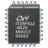

Mikrocontroller
Ausbaufähige Anleitung
Dieser Anleitung fehlen noch einige Informationen. Wenn Du etwas verbessern kannst, dann editiere den Beitrag, um die Qualität des Wikis noch weiter zu verbessern.
Anmerkung: Diese Seite dient als Einstieg zur Mikrocontrollerprogrammierung. Es fehlen noch weitere Artikel zu anderen Mikrocontrollern.
 Mikrocontroller (µC) sind Halbleiterchips, bei denen Prozessor und Peripherie in einem Chip integriert sind. Oft sind auch der Arbeits- und Programmspeicher teilweise oder komplett in dem gleichen Chip integriert. Mikrocontroller befinden sich in vielen technischen Geräten (z.B. MP3-Player, Router, Mobiltelefone), die heute im Alltag weit verbreitet sind und Elektronikbastler verwenden sie bei ihren Hobbyprojekten.
Für Linux existieren viele Werkzeuge für die Entwicklung von Mikrocontroller-Software, wie Cross-Compiler für verschiedene Prozessorarchitekturen und Programme für das Übertragen des Programmcodes auf den jeweiligen Mikrocontroller. Mikrocontroller werden meistens in Assembler oder C programmiert. Andere Programmiersprachen wie Ada, BASIC, C++ oder Pascal kommen jedoch auch zum Einsatz. Es gibt für einige Chips sogar Implementierungen von Python- oder Java-VMs.
Die Programmentwicklung für Mikrocontroller, d.h. das Erstellen und Compilieren des Quellcodes, geschieht gewöhnlich auf dem PC. Zum Testen muss das Programm dann auf den Mikrocontroller übertragen werden. Ausnahme sind Prozessorarchitekturen, für die ein Software-Emulator zur Verfügung steht. In diesem Fall ist es auch möglich, ein Programm direkt auf dem PC zu testen. Oft ist ein Programmtest in einem Software-Emulator jedoch nicht ausreichend, denn Mikrocontroller werden in der Regel verwendet, um externe Geräte (LED-Anzeigen, Motoren, ...) anzusteuern und man möchte bei einem Test natürlich auch überprüfen, ob man diese Geräte korrekt ansteuert.
Benötigte Hardware¶
Um in die µC-Welt einzusteigen, benötigt man nicht nur Programmierkenntnisse. Es ist hilfreich, sich anfangs ein so genanntes Evaluationsboard zu kaufen, auf welchem bereits ein Mikrocontroller aufgelötet ist. Flexibler ist man mit einem Evaluationsboard, das Steckplätze für mehrere verschiedene Mikrocontrollertypen besitzt. Den größten Freiheitsgrad hat man mit einer Steckplatine, zu der aber zusätzlich mehrere elektronische Bauelemente benötigt werden.
Fertige Evaluationsboards sind stark abhängig von der Architektur des verwendeten Mikrocontrollers, so dass es ratsam ist, sich vor der Anschaffung genauer über Erweiterungsmöglichkeiten zu informieren. Bei Steckplatinen besteht diese Einschränkung nicht, allerdings kann es dort passieren, dass man die Schaltung nicht korrekt aufbaut oder eines der Bauteile keinen ausreichenden Kontakt in der Platine findet. Sorgfältiges Arbeiten ist wichtig.
Im Fall von Evaluationsboards ohne integriertes Programmierer-Modul sowie generell bei Steckplatinen wird in der Regel zusätzlich ein so genannter Programmer benötigt. Dabei handelt es sich im Wesentlichen um einen Protokoll-Umsetzer, der die Schnittstelle des Computers (meist USB) mit der Schnittstelle des Mikrocontrollers verbindet. Solche Programmer gibt es fertig zu kaufen, günstiger sind meist Bausätze, oder man baut sich einen selbst auf, z.B. auf einer eigenen Steckplatine.
Cross-Compiler¶
Ein Cross-Compiler erzeugt Maschinencode für ein System, dessen Prozessorarchitektur anders ist und/oder bei dem ein anderes Betriebssystem installiert ist, als bei dem System, auf dem der Cross-Compiler ausgeführt wird. Für Linux existieren Cross-Compiler zumindest für diese Prozessorarchitekturen:
Raspberry Pi (ARM; kein Cross-Compiler notwendig, da nativ unterstützt)
In-System-Programmierung¶
Unter In-System-Programmierung (ISP) versteht man die Fähigkeit, einen Mikrocontroller zu programmieren, während er in eine Schaltung eingebaut ist. Diese Eigenschaft ist allerdings an bestimmte Randbedingungen gebunden. Insbesondere dürfen die verwendeten Anschlüsse des Mikrocontrollers nicht durch Teile der übrigen Schaltung belastet oder beeinflusst werden.
Mikrocontroller-Familien¶
Im Hobbybereich und über all dort, wo generell keine hohe Rechenleistung benötigt wird, werden meist einfache 8-Bit-Mikrocontroller eingesetzt. Sehr verbreitet sind dabei Mikrocontroller der Hersteller Atmel und Microchip. Während diese beiden Mikrocontrollerfamilien in Sachen Flexibilität, Leistung und Preis etwa vergleichbar sind, hat man es bei der Familie AVR von Atmel etwas leichter als bei der Familie PICmicro von Microchip, weil die Unterstützung durch deutschsprachige Communities größer ist.
Für hohe Rechenleistung eignen sich ARM-basierte Mikrocontroller. Für den mittleren Leistungsbereich gibt es ein vielfältiges Angebot, etwa den MSP430, ATxmega oder größere PICmicro. Natürlich muss man bei mehr Rechenleistung auch mit einem höheren Stromverbrauch rechnen. Ein Umstand, den es bei batteriebetriebenen Anwendungen genau zu prüfen gilt.
Bei der Erstentscheidung für eine bestimmte Mikrocontrollerfamilie sollte man darauf achten, dass Hersteller gerne mit subventionierten Evaluationsboards locken. Hat man vor, später einen etwas größeren Mikrocontroller der gleichen Familie zu verwenden, oder möchte man dann generell eigene Schaltungen mit diesem Mikrocontroller aufbauen, wird es verhältnismäßig teuer. Gleiches gilt auch für Entwicklungsumgebungen und Softwarebibliotheken, die nicht selten kostenpflichtig sind oder lizenztechnischen Einschränkungen unterliegen. Auch hier bietet freie Software erhebliche Vorteile.
 - Umfangreiche Webseite zum Thema Mikrocontroller
- Umfangreiche Webseite zum Thema Mikrocontroller- Erstellt mit Inyoka
-
 2004 – 2017 ubuntuusers.de • Einige Rechte vorbehalten
2004 – 2017 ubuntuusers.de • Einige Rechte vorbehalten
Lizenz • Kontakt • Datenschutz • Impressum • Serverstatus -
Serverhousing gespendet von